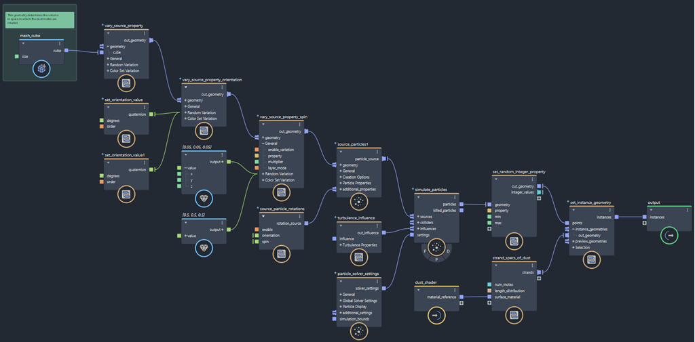
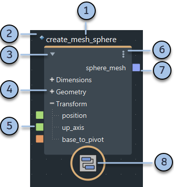

图表剖析
下图显示了示例粒子图表的顶层。所有 Bifrost 图表都具有类似元素。

数据流
Bifrost 是纯数据流图表。数据沿着节点上端口之间的连接从左到右向“下游”流动。
输入可能通过 input 节点（例如，场景几何体或数值参数）来自主场景。或者，可以在图表本身内创建它们，例如，使用 value 节点或简单的几何体创建节点（如 create_mesh_sphere）。
图表计算的结果将通过与 output 或 terminal 节点的连接发送到场景。大多数图表输出 Bifrost 几何体对象，从而在场景中创建 bifrostGraph 对象。这些对象可以显示在视口中，也可以使用 Arnold 等兼容渲染器进行渲染。
默认情况下，图表具有一个 input 节点和一个 output 节点。但是，您可以采用与其他节点相同的创建方式来创建更多的 input 和 output 节点。
或者，Bifrost 图表可以将几何体输出到标准格式（如 Alembic 和 VDB），以便与其他渲染器一起使用。请参见从文件输入和输出数据。
节点
节点对其输入执行操作，并输出结果。输入端口位于左侧，输出端口位于右侧。
有执行基本函数的节点（例如 add 和 multiply）。也有执行许多操作以创建效果的高级节点（例如 simulate_particles），以及用作有用工具函数的中级节点。
高级节点和中级节点通常是复合。复合是包含其他节点（甚至可能是其他复合）的子图的节点。可以双击复合以进入它并查看其内容。还可以创建您自己的复合来组织图表，以及发布它们供重复使用 - 请参见创建和编辑复合。
默认情况下会引用您添加到图表中的已发布复合。这意味着，它们指代磁盘上的节点定义。您不能修改所引用复合的内部子图，除非您在本地将其导入到图表中 - 请参见导入引用复合。

- 节点名称或值。默认名称基于节点的类型，但您可以双击该名称以键入新名称。如果当前显示值而不是名称，则在选择节点时，可能需要先选择“显示 > 显示节点名称”(Display > Show Node Names)。若要在名称上方显示节点类型，请按 T 键，或选择“显示 > 显示节点类型”(Display > Show Node Types)。
- 菱形图标。这表示节点是一个引用的复合。引用的复合包含已发布以供重用的子图。您不能修改其内部图，除非使其可编辑。请参见导入引用复合。
- 单击三角形以收拢或展开节点。或者，您可以使用 1、2 和 3 热键或“显示”(Display)菜单上的命令。当节点收拢时，不会显示其各个端口。
- 端口组。单击 + 或 – 以展开和收拢。
- 输入端口。连接其他节点的输出，或在“参数编辑器”(Parameter Editor)中输入值。右键单击以访问其他选项。
- 节点菜单。也可以右键单击节点的主体。
- 输出端口。连接到其他节点的输入。右键单击以访问其他选项。
- 节点图标。某些节点可能具有与其功能相关的特殊图标。上面显示的图标是复合的默认图标。在大多数情况下，该图标有助于图表的可读性和识别性，但在使用具有实验图标（实验室烧瓶的橙色叠加图案）的节点时要小心 - 请参见关于实验节点。